Символіка в українській вишивці
Історія вишиванки, як національного одягу, сягає корінням углиб століть. Впродовж них вишивані на сорочках орнаменти та їх символіка вбирали та поєднували художні елементи різних культур, але при цьому зберегли свою самобутність.
Всі орнаменти розділяють на декілька видів:
- Геометричні орнаменти — лінії, ромби, трикутники, хрести та інші фігури.
- Рослинні орнаменти — квіти, листя, гілки, дерева.
- Тваринні орнаменти — зображення різних тварин, птахів, риб або їх окремих елементів – очей, рогів, кігтів.
Така різноманітність орнаментів з’явилася неспроста, оскільки візерунки на одязі виконували не лише декоративну функцію, а ще й містичну, адже вишиванки відігравали роль оберега.
Тут зібрані основні види орнаментів, що зустрічаються в сучасній вишивці та подане їх значення.
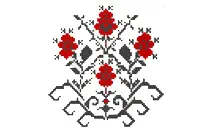
Дерево життя
Краса, молодість, оновлення душі і тіла, безсмертя, відродження, родючість.
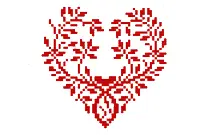
Серце
Символ, який вишивався переважно на весільних сукнях для щасливого сімейного життя.
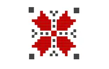
Зорі
Складені у форму Алатир - зв'язок людини з космосом, оберіг від зла та негативу, захищає від хвороб та безсилля.
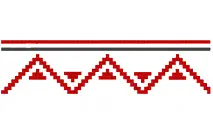
Шеврони
Обергуті вершиною вниз - жіноча, матеріальна сутність, обернуті вершиною вгору - чоловіча, духовна сутність.
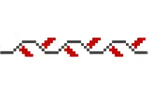
Хвилясті лінії
Вода, дощ, плинність часу та еволюція Всесвіту.
Хрест
Оберіг від злих духів. Прямий хрест - символ Творця, Сонця та чоловічого начала. Косий хрест - жіноче начало, символ Місяця.
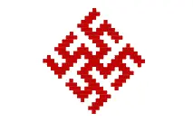
Сварга
Символ сонячного культу, домашнього вогнища, родинного щастя.
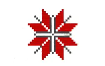
Повна рожа (восьмипроменева зірка)
Поєднання жіночого та чоловічого начал, що дає життя усьому. Цей символ часто називають Зіркою Богородиці і вишивають на іконах Діви Марії.
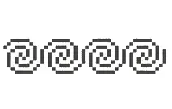
Кривий танець (безконечник)
Cимволізує життєвий шлях тає символом вічного буття, сили та життєвої енергії.
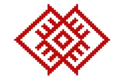
Ромб
Союз сонця і землі, символ плодючості.
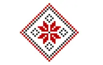
Ромб з крапкою посередині
Засіяне поле.
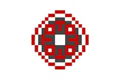
Коло
Символ сонця, божественної енергії, безперервності буття та вічності.
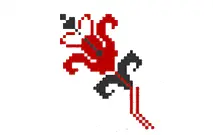
Рослинний мотив
Символ чистоти, процвітання роду та життя.
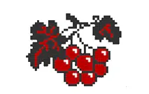
Калина
Любов, багатство, краса. Також це символ материнства (кущ - мати, ягоди - дітвора).
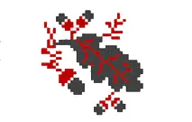
Гілки дуба
Вишиваються зазвичай на чоловічих сорочках, як прообраз Перуна.
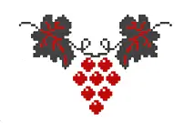
Виноград та лоза
Давній символ сімейного щастя.
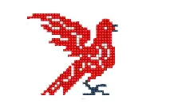
Голуб
Символ Святого Духа. А також - щирої любові, злагоди й ніжності.Голуб і голубка в парі -символ вічної та вірної любові.
Також ви можете створити власний орнамент. Зробити це дуже просто за допомогою спеціальної абетки та прикладів орнаментів, наведених нижче.
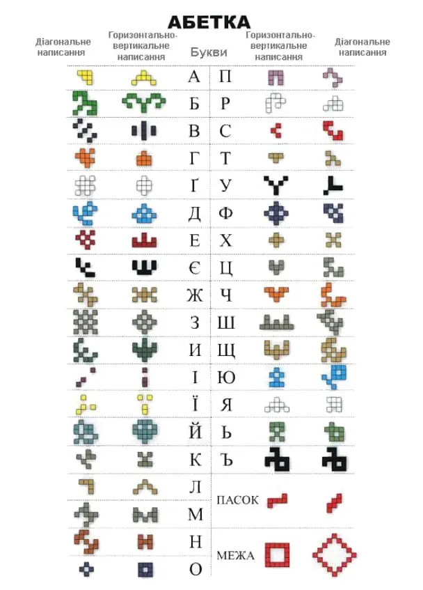
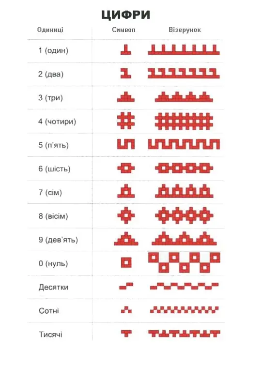
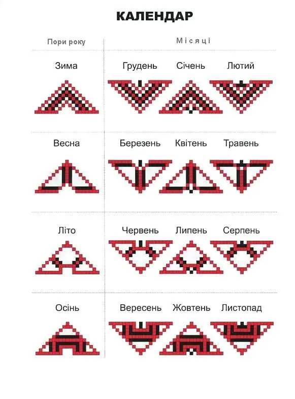
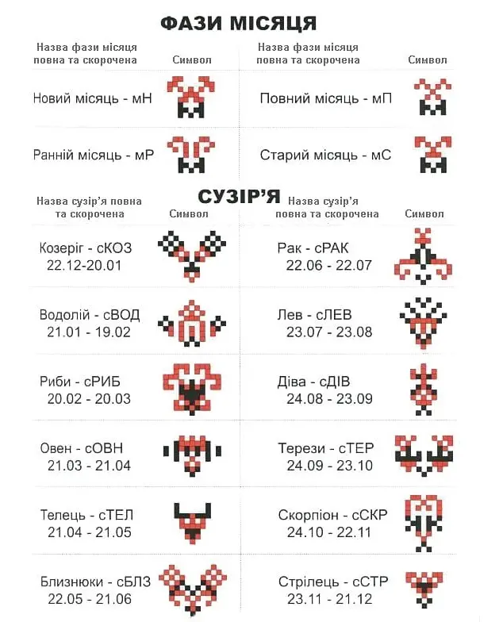
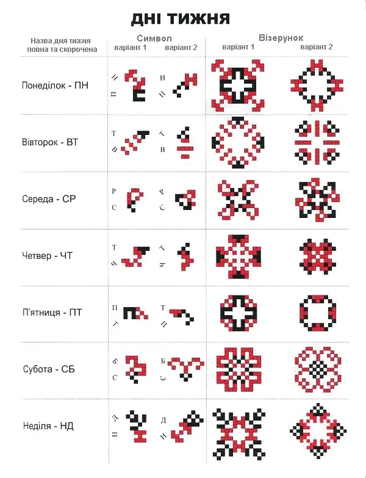
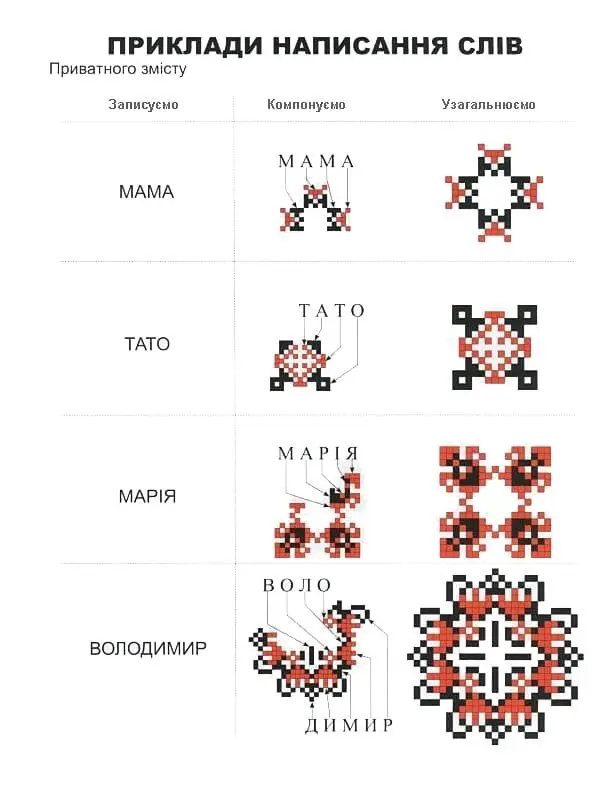
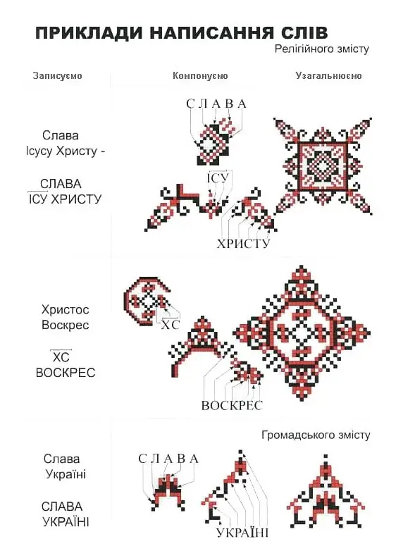
Значення кольору української вишиванки
Сакральне значення мають не лише візерунки на сорочці, але і їх колір:
- Червоний — колір сонця, удачі, захисту, любові й пристрасті
- Зелений — символізує процеси народження та росту.
- Жовтий — колір сонячної енергії, життя, радості, багатства і процвітання.
- Синій — символ жіночої енергії, спокою, колір води і неба.
- Білий — колір чистоти, святості, незайманості (білі сорочки носили незаміжні дівчата).
- Чорний — колір землі та родючості, але в деяких регіонах цей колір означав біль та страждання, тому будьте обережними, обираючий даний колір.
І тепер, ознайомившись з орнаментами та символами, можете приступати до створення свого власного візерунку!